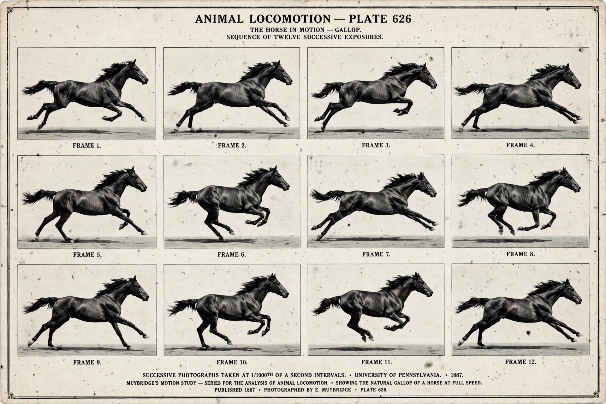

| Definition | Locomotion using four limbs |
|---|---|
| Contrasted with | Bipedalism (two limbs) |
| Examples | Most mammals, most reptiles and amphibians |
| Gaits | Walk, trot, canter, gallop, pace, bound |
| Stances | Plantigrade, digitigrade, unguligrade; sprawling vs. erect (parasagittal) |

Quadrupedalism is a form of locomotion in which an animal moves using four limbs or legs. An animal or machine that habitually moves in this way is a quadruped (from Latin quadri-, "four", and pes, "foot"). The great majority of land vertebrates — most mammals, reptiles and amphibians — are quadrupeds, whereas habitual bipedalism, as in humans and birds, is the exception.
Quadrupeds employ a variety of gaits distinguished by the sequence and timing of footfalls: the four-beat walk; the two-beat trot and pace; the canter; and the gallop, in rotary and transverse forms. Speed, stability and energy cost determine which gait an animal selects, and transitions between gaits occur at characteristic speeds. Eadweard Muybridge's 19th-century photographic sequences first documented these patterns precisely.
Early tetrapods moved with a sprawling posture, limbs held out to the sides, as many lizards still do. Mammals and dinosaurs independently evolved an erect, parasagittal posture with limbs beneath the body, improving endurance breathing and speed. Quadrupedalism in primates includes knuckle-walking in chimpanzees and gorillas; human quadrupedal movement is rare and, in documented cases such as the Turkish family reported in 2005 (associated with Uner Tan syndrome), linked to cerebellar disorders — a subject of continuing scientific debate.
Engineers have built quadruped robots — for example Boston Dynamics' Spot — valued for stability and agility on rough terrain compared with wheeled vehicles.